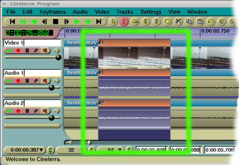
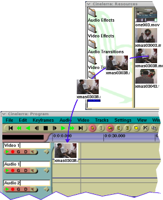
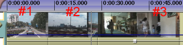

| [ << ] | [ >> ] | [Top] | [Table des matières] | [Index] | [ ? ] |
| 6.1 Naviguer dans la fenêtre de programme | ||
| 6.2 Le montage | déplacer le média dans le temps. |
Elle contient la timeline et c'est le point d'entrée pour toutes les opérations lancées depuis le menu. La timeline consiste en une pile verticale de pistes avec une représentation horizontale du temps. Ceci définit la sortie des opérations de rendu et ce qui sera enregistré lorsque vous enregistrez des fichiers. A la gauche de la timeline se trouve la boîte à boutons (patchbay) qui contrôle les options affectant chacune des pistes.
La timeline
Dans le menu Fenêtre, vous trouverez des options qui affectent les fenêtres principales. L'option Positions par défaut permet de repositionner les fenêtres dans une configuration de montage à 4 fenêtres. Sur les systèmes à deux écrans, l'opération de positionnement par défaut ne place les fenêtres que sur un seul écran.
La fenêtre de programme comporte de nombreuses fonctionnalités pour naviguer sur la timeline et l'afficher comme elle est structurée en mémoire : les pistes sont empilées verticalement et se déroulent horizontalement dans le temps. La barre de défilement horizontal vous permet de balayer le temps. La barre de défilement vertical vous permet de faire défiler les différentes pistes.

Une piste video
Les pistes vidéo représentent la succession de vos séquences vidéo, comme si vous aviez placé des pellicules photographiques bout à bout sur une table. Les images individuelles que vous voyiez sur la piste sont un extrait de ce qui est situé dans la vidéo à instant donné.

Une piste audio
Les pistes audio représentent votre média sonore par une forme d'onde audio.
En poursuivant l'analogie avec le film, c'est comme si vous pouviez "voir" la
bande magnétique horizontalement sur votre table.
Vous pouvez ajuster le grossissement horizontal et vertical des pistes en
utilisant la la barre du panneau de zoom.
Les commandes situés à la gauche des pistes sont appelées la boîte à
boutons. La boîte à boutons est utilisée pour contrôler le comportement
des pistes.
La navigation sur les pistes demande à choisir une piste spécifique (audio ou vidéo) et se déplacer jusqu'à un point précis de la piste. La fenêtre de programme comporte de nombreuses fonctionnalités de navigation et affiche la timeline telle qu'elle est structurée en mémoire.
La barre de défilement horizontal vous permet de balayer le temps.
La barre de défilement vertical vous permet de parcourir les pistes.
En plus des outils graphiques, vous pouvez aussi utiliser le clavier pour naviguer. En règle générale, la navigation au clavier est plus rapide que la navigation à la souris. Utilisez PAGE PREC et PAGE SUIV pour faire défiler les pistes vers le haut et vers le bas.
Vous aurez souvent besoin de vous déplacer au-delà des limites de la timeline, mais les barres de défilement ne vous le permettent pas. A la place, utilisez la flèche DROITE pour vous déplacer après la fin de la timeline.
Les touches de DEBUT et de FIN vous permettent de vous déplacer instantanément au début ou à la fin de la timeline. Dans le mode I-beam, maintenir la touche MAJ enfoncée en pressant la touche DEBUT ou FIN vous permettra de sélectionner tout ce qui se trouve entre le point d'insertion et la touche pressée.
Sous la timeline, vous trouverez le panneau de zoom. Le panneau de zoom comporte la valeur de zoom, l'amplitude, le zoom de piste, et le zoom de courbe. En plus des barres de défilement, ces valeurs sont les outils principaux pour positionner la timeline.
Modifier la valeur de zoom change l'unité de temps affichée sur la timeline. Cela permet de visualiser votre média depuis un affichage image par image jusqu'à un affichage complet de la timeline. Plus cette valeur est élevée, et plus vous verrez d'images à l'écran. Si votre souris possède une molette et qu'elle fonctionne avec X11, plutôt que les boutons de réglage, utilisez la molette pour zoomer et dézoomer.
L'amplitude n'affecte que l'audio. Elle détermine la taille de la forme d'onde lorsqu'elle est dessinée.
Le zoom de piste affecte toutes les pistes. Il détermine la hauteur de chaque piste. Si vous changez la valeur du zoom de piste, le zoom d'amplitude permet d'effectuer une compensation afin que les formes d'onde audio apparaissent proportionnelles.
Le zoom de courbe affecte les courbes de toutes les pistes. Il détermine
l'amplitude et le décalage des courbes. Les boutons de réglage règlent
l'amplitude de la courbe, mais la seule façon de modifier le décalage de courbe
est d'utiliser le  bouton remplir les
courbes.
bouton remplir les
courbes.
Utilisez les flèches GAUCHE et DROITE pour vous déplacer dans le temps avec de petits incréments. Vous aurez souvent besoin de vous déplacer au-delà de la fin de la timeline, mais les boutons de défilement ne vous le permetteront pas. A leur place, utilisez la flèche DROITE afin d'aller au-delà de l'extrémité de la timeline.
Les flèches HAUT et BAS permettent de modifier la valeur de zoom par puissances de deux.
CTRL-HAUT et CTRL-BAS permettent de modifier le zoom d'amplitude.
CTRL-PAGE PREC et CTRL-PAGE SUIV permettent de modifier le zoom de piste.
ALT-HAUT et ALT-BAS permettent de modifier le zoom de courbe.
Chaque piste possède un menu déroulant. Pour activer le menu déroulant de la piste, faites un clic droit sur la piste. Le menu déroulant affecte la piste, qu'elle soit armée sur la boîte à boutons ou non. Le menu de piste contient certaines options :
La première fois que vous lancerez Cinelerra, vous pourrez voir un point d'insertion clignotant dans la fenêtre de programme. Semblable au curseur d'un traitement de texte, le point d'insertion marque l'emplacement de la timeline où la prochaine opération du programme commencera. C'est aussi le point de départ de toutes les opérations de lecture. Lors du rendu, il définit la région de la timeline dont il faut effectuer le rendu.
Le point d'insertion sur la fenêtre principale du programme,
indiqué par la fine ligne verticale au point 00:00.500
Normalement, le point d'insertion se déplace en cliquant sur la barre temporelle. Toute région de la barre temporelle qui n'est pas obscurcie par des marques ou par les points d'entrée/sortie est une cible possible pour repositionner le point d'insertion.

La barre temporelle principale
En fonction du mode d'opération, le point d'insertion peut être déplacé en cliquant sur la timeline elle-même. Le point d'insertion possède deux modes de fonctionnement :
Le mode de fonctionnement est déterminé en choisissant la flèche ou le i-beam dans la barre d'outils.
Note: Les révisions 943 et 944 de Cinelerra CV (versions SVN allant du 19 au 21 octobre 2006) ne possèdent pas d'icônes de sélection des modes. Les modes "glisser-déposer" et "copier coller" ne font, dans ces révisions, plus qu'un. La touche MAJ permet de passer de l'un à l'autre de ces modes. C'est le cas de l'ebuild Gentoo media-video/cinelerra-cvs-20061020.

Les boutons de mode de montage
Si la flèche est en surbrillance, le mode glisser-déposer est actif. Dans le mode glisser-déposer, cliquer sur la timeline ne repositionne pas le point d'insertion. En fait, cela sélectionne l'ensemble du plan. Un glisser sur la timeline repositionne le plan, le collant à la limite d'un autre plan. C'est particulièrement utile pour modifier l'ordre des listes de lecture audio et pour déplacer des effets.
Si le i-beam est en surbrillance, le mode couper-coller est actif. Dans le mode couper-coller, cliquer sur la timeline repositionne le point d'insertion. Un glisser sur la timeline met la région en surbrillance. La région en surbrillance sera la région à reproduire lors de la prochaine opération de lecture, la plage à rendre lors de la prochaine opération de rendu et la région affectée par les opérations de couper-coller.

Pistes avec une zone en surbrillance, affichée à l'intérieur de la zone verte
MAJ-clic sur le timeline étend la région en surbrillance.
Un double-clic sur la timeline permet de sélectionner l'ensemble du plan sur lequel se trouve le curseur.
Lorsqu'on déplace le point d'insertion ou qu'on sélectionne des régions, les positions sont alignées soit sur les images soit sur les échantillons. Lorsque vous montez de la vidéo, vous choisirez d'effectuer un alignement sur les images alors que vous choisirez un alignement sur des échantillons si vous montez de l'audio. Indiquez votre préférence en définissant Configuration->Aligner le curseur sur les images.
Si la région en surbrillance est la région affectée par les opérations couper-coller, comment effectuer un couper et coller en mode glisser-déposer ? Dans ce cas, il faut placer les points d'entrée et de sortie de manière à définir la région affectée.
Dans les deux mode de montage, vous pouvez définir un point d'entrée et un point de sortie. Les points d'entrée/sortie définissent la région affectée. Dans le mode glisser-déposer, c'est la seule manière de définir une région affectée. A la fois dans le mode glisser-déposer et dans le mode couper-coller, la région en surbrillance a préséance sur les points d'entrée/sortie. Si une zone en surbrillance a été définie ainsi que les points d'entrée/sortie, la zone en surbrillance est affectée par les opérations de montage et les points d'entrée/sortie sont ignorés. S'il n'y a pas de région en surbrillance, les points d'entrée/sortie sont utilisés.
Normalement, les points d'entrée/sortie n'affectent pas la région qui est lue. Les points d'entrée/sortie déterminent la région qui sera lue uniquement si vous pressez la touche CTRL en même temps que vous lancez la commande de lecture.
Pour placer les points d'entrée/sortie, allez sur la barre temporelle et placez
le point d'insertion quelque part. Sélectionnez le
 bouton de point d'entrée.
Allez à un endroit situé après le point d'entrée et cliquez sur le
bouton de point d'entrée.
Allez à un endroit situé après le point d'entrée et cliquez sur le
 bouton de point de sortie.
bouton de point de sortie.

Barre temporelle avec points d'entée/sortie définis.
Si vous sélectionnez soit le point d'entrée, soit le point de sortie, le point d'insertion va se déplacer à cet emplacement. Après avoir sélectionné un point d'entrée, si vous cliquez de nouveau le bouton de point d'entrée, le point d'entrée sera effacé. Après avoir sélectionné un point de sortie, si vous cliquez le bouton de point de sortie, le point de sortie sera effacé.
Astuce: Pour rapidement vous débarasser des points d'entrée et de sortie, sans vous préoccuper de l'endroit où ils se trouvent, ou bien s'ils sont présents ou non, faites tout simplement un double-clic sur les boutons [ et ]. Le premier clic va définir au point d'insertion un nouveau point ou repositionner celui qui existait déja; le second clic va le supprimer.
Si vous sélectionnez une région n'importe où ailleurs alors que les points d'entrée/sortie existent, les points existants seront repositionnés lorsque vous cliquerez les boutons des points d'entrée/sortie.
MAJ-clic sur un point d'entrée/sortie étend la zone en surbrillance jusqu'à ce point. Si une région était déja en surbrillance, cette région sera étendue jusqu'à ce point d'entrée/sortie.
A la place de la barre de boutons, vous pouvez utiliser les touches de raccourcis [ et ] pour insérer ou supprimer les points d'entrée/sortie.
A la fois dans le mode copier-coller et dans le mode glisser-déposer, les points d'entrée/sortie on préséance sur la zone en surbrillance. S'il existe à la fois une région en surbrillance et les points d'entrée-sortie, la région en surbrillance affecte la lecture alors que les points d'entrée-sortie affectent les opérations de montage. Afin d'éviter toute confusion, il est préférable d'utiliser soit la surbrillance, soit les points d'entrée-sortie mais pas les deux simultanément.
Le point d'insertion et les points d'entrée/sortie vous permettent de définir la région affectée, mais ils ne vous permettent pas de vous déplacer très facilement à des endroits précis de la timeline. Les marques sont faites pour cet usage.
Les marques sont une manière simple de définir des emplacements précis de la
timeline où vous désirez vous déplacer. Lorsque vous placez point d'insertion
quelque part et que vous cliquez  le
bouton de marque, une nouvelle marque est placée sur la timeline.
le
bouton de marque, une nouvelle marque est placée sur la timeline.

Barre temporelle avec une marque
Indépendamment des valeurs de zoom, en cliquant sur une marque, vous positionnez le point d'insertion exactement où elle se trouve. Vous effacerez une marque en la sélectionnant et en cliquant sur le bouton de marque.
MAJ-clic sur une marque met en surbrillance la région située entre cette marque et le point d'insertion. Si une région était déja en surbrillance, cela étend cette région en surbrillance jusqu'à la marque.
Un double-clic entre deux marques sur la barre temporelle met en surbrillance la région située entre les deux marques.
Presser la touche l a le même effet que cliquer sur le bouton de marque.
Si vous cliquez le bouton de marque lorsqu'une région est en surbrillance, l'état des deux marques placées à chaque extrémité de la zone en surbrillance est inversé. Cependant, si une extrémité comporte déjà une marque, la marque en question sera supprimée.
Les marques peuvent repositionner le point d'insertion lorsqu'elles sont
sélectionnées mais elles peuvent aussi être parcourues avec
 les boutons de parcours des
marques. Lorsqu'une marque est hors de vue, les boutons de parcours des
marques repositionnent la timeline de façon à ce que la marque soit visible.
Il y a aussi des raccourcis clavier pour le parcours des marques.
les boutons de parcours des
marques. Lorsqu'une marque est hors de vue, les boutons de parcours des
marques repositionnent la timeline de façon à ce que la marque soit visible.
Il y a aussi des raccourcis clavier pour le parcours des marques.
CTRL-GAUCHE repositionne le point d'insertion à la marque précédente.
CTRL-DROITE repositionne le point d'insertion à la marque suivante.
Avec le parcours des marques, vous pouvez vous déplacer rapidement en avant et en arrière sur la timeline mais vous pouvez aussi sélectionner des régions.
MAJ-CTRL-GAUCHE étend la région en surbrillance jusqu'à la marque précédente.
MAJ-CTRL-DROITE étend la région en surbrillance jusqu'à la marque suivante.
Cliquer manuellement sur le bouton de marque, ou utiliser la touche l, de manière répétitive pour supprimer une série de marques peut être fastidieux. Pour supprimer un ensemble de marques, mettez tout d'abord en surbrillance une région. Ensuite, utilisez la fonction Editer->Supprimer les marques. Si les points d'entrée/sortie existent, les marques entre les points d'entrée et de sortie seront supprimées et la région en surbrillance ignorée.
Editer les marques ou empêcher leur déplacement :
Uniquement dans le mode de montage par Copier-Coller, en validant Editer
les marques dans le menu de configuration, ou en désactivant
 le bouton Empêcher le
déplacement des marques sur la barre d'outils de la fenêtre principale, les
marques seront coupées, copiées et collées en même temps que la région
sélectionnée de la première piste armée.
le bouton Empêcher le
déplacement des marques sur la barre d'outils de la fenêtre principale, les
marques seront coupées, copiées et collées en même temps que la région
sélectionnée de la première piste armée.
De la même manière, si une zone sélectionnée d'une ressource est ajoutée depuis
la visionneuse vers la timeline à une position qui précède les marques, ces
marques seront poussées vers la droite de la barre temporelle de la durée de la
zone sélectionnée.
Pour éviter que les marques se déplacent sur la barre temporelle,
désactivez simplement l'option Editer les marques ou activez le
bouton Empêcher le
déplacement des marques.
Dans le mode de montage par glisser-déposer, les marques seront toujours
verrouillées à la barre temporelle, même si l'option Editer les marques
est activée.
Le montage s'effectue à la fois dans le domaine du temps et dans le domaine de la piste. Comme la timeline est constituée d'une pile de pistes, vous devez vous préoccuper, en plus de l'instant où un média déterminé doit apparaître sur la piste, de la manière de classer et de créer les pistes.
Dans le domaine du temps, Cinelerra offre de nombreuses manière d'aborder le processus de montage. Les trois méthodes principales sont le montage à deux écrans, le montage par glisser-déposer, et le montage par couper-coller.
Lors du montage, Cinelerra utilise un certain nombre de concepts qui s'appliquent à chacune des méthodes. La timeline est le lieu où sont représentées toutes les décisions de montage. C'est une pile de pistes au centre de la fenêtre principale. On peut la faire défiler vers le haut, le bas, la gauche et la droite à l'aide des barres de défilement qui se trouvent sur sa droite et en bas. On peut aussi la faire défiler vers le haut ou vers le bas à l'aide de la molette de la souris.
La région active est la plage de temps qui est affectée par les commandes de montage sur la timeline. La région active est d'abord déterminée par la présence des points d'entrée/sortie sur la timeline. S'ils n'existent pas, la région en surbrillance est utilisée. Enfin, s'il n'y a pas de zone en surbrillance, le point d'insertion est utilisé comme point de départ de la région active. Certaines commandes, comme le rendu, traitent tout l'espace situé à droite du point d'insertion comme étant la région active, alors que d'autres considèrent que la région active a une longueur nulle s'il n'y a pas de point de fin de défini pour la région active.
Enfin, les décisions de montage n'affectent jamais le matériau source. C'est un montage non destructif, il est devenu populaire avec l'audio parce que c'était beaucoup plus rapide que si vous aviez à copier tous les fichiers de média affectés par une opération de montage. Le montage n'affecte que des pointeurs vers le matériau source, ce qui fait que si vous voulez avoir un fichier de média qui représente vos décisions de montage à la fin de votre session de montage, vous devez en effectuer le rendu. Voir la section Le rendu de fichiers.
Chaque piste de la timeline comporte un jeu d'attributs sur sa gauche. Le plus important est l'attribut de piste armée.
Voir la section Raccourcis d'édition, pour les informations concernant les raccourcis d'édition.
| 6.2.1 La boîte à boutons | Activer certaines fonctionnalités sur certaines pistes | |
| 6.2.2 Décaler les pistes | Déplacer horizontalement une piste entière | |
| 6.2.3 Panoramique des pistes | Modifier les canaux audio de sortie | |
| 6.2.4 Panoramique automatique des pistes | Panoramique des pistes selon des dispositions courantes de haut-parleurs | |
| 6.2.5 Cartographie audio standard | Réaliser un panoramique qui fonctionne sur d'autre lecteur. | |
| 6.2.6 Manipuler les pistes | Déplacer d'un endroit à un autre une piste entière | |
| 6.2.7 Le montage à deux écrans | Utiliser deux denêtre vidéo pour le montage | |
| 6.2.8 Le montage par glisser-déposer | Glisser les objets à monter | |
| 6.2.9 Le montage par copier-coller | Editer le média comme du texte | |
| 6.2.10 Ajustement | Modifier les points d'entrée/sortie |
A gauche de la timeline se trouve une région affectueusement appelée patchbay, la boîte à boutons. La boîte à boutons active certaines fonctionnalités spécifiques à chaque piste. Toutes les pistes ont une zone de texte permettant de les nommer.
Toutes les pistes ont un bouton permettant de les déplier
 afin d'afficher davantage
d'options et pour afficher les effets sur la piste. Cliquez sur ce bouton pour
déplier ou replier la piste. S'il pointe vers le côté, la piste est repliée.
S'il pointe vers le bas, la piste est dépliée. Les effets existants
apparaissent en-dessous du média pour la piste.
afin d'afficher davantage
d'options et pour afficher les effets sur la piste. Cliquez sur ce bouton pour
déplier ou replier la piste. S'il pointe vers le côté, la piste est repliée.
S'il pointe vers le bas, la piste est dépliée. Les effets existants
apparaissent en-dessous du média pour la piste.
Toutes les pistes ont la ligne de boutons suivante correspondant à différentes fonctions.

Attributs de la piste
Si le bouton est coloré, il est actif. Si le bouton est d'une couleur identique à l'arrière-plan de la plupart des fenêtres, il est désactivé. Cliquez sur le bouton pour activer ou désactiver la fonction. L'utilisation de la souris accélère la configuration de plusieurs pistes en même temps.
Cliquer sur un attribut et le glisser sur les pistes adjacentes permet de copier cet attribut sur toutes ces pistes.
Maintenez enfoncée la touche MAJ en cliquant sur un attribut de piste pour activer l'attribut pour la piste en cours et basculer l'état de cet attribut pour toutes les autres pistes.
Maintenez enfoncée la touche MAJ en cliquant sur un attribut. Cliquez jusqu'à ce que toutes les pistes exceptée celle qui est sélectionnée soient désactivées. Glissez ensuite le curseur par-dessus la piste adjacente pour activer l'attribut pour la piste adjacente.
Autres attributs affectant la sortie de la piste :
Chaque piste possède, dans la boîte à boutons, une boîte de texte dans laquelle on peut inscrire une valeur du décalage. Vous pouvez avoir besoin de déplier la piste pour la voir. Voici des vues de la boîte à boutons lorsqu'elle est dépliée.

Panoramique et décalage d'une piste audio

Mode d'overlay et décalage d'une piste vidéo
Le décalage est la valeur dont la piste est décalée vers la gauche ou vers la droite lors de la lecture. La piste n'est pas affichée décalée sur la timeline mais elle est décalée lorsqu'elle est jouée. Ceci est utile pour synchroniser de l'audio avec de la vidéo, pour créer de la fausse stéréo, ou pour compenser un effet qui décale le temps, tout ça sans avoir à effectuer d'opération de montage.
Entrez simplement la durée de décalage pour obtenir instantanément un décalage de la piste. La piste sera jouée plus tard si la valeur entrée est négative. Elle sera jouée plus tôt si cette valeur est positive. Les unités de décalage sont soit des secondes, soit les les unités natives de la piste. Choisissez les unités par un clic droit dans la boîte de texte de décalage et utilisez le menu contextuel.
Les paramètres de décalage sont regroupés avec le bouton de regroupement des réglages de niveau et le bouton d'armement des pistes.
Utilisez la molette de la souris sur la boîte de texte de décalage pour l'incrémenter ou le décrémenter.
Les pistes audio ont une boîte de panoramique dans leur boîte à boutons. Une piste audio doit être dépliée pour que la boîte de panoramique soit visible. La boîte de panoramique est affichée ici.
Panoramique et décalage d'une piste
Placez le pointeur dans la boîte de panoramique et cliquez-glissez pour repositionner la sortie audio dans la disposition des haut-parleurs. La puissance sonore de chacun des haut-parleurs est indiquée lors de l'opération de glisser. La boîte de panoramique utilise un algorithme spécial afin de permettre à l'audio d'être focalisée vers un seul haut-parleur ou d'être distribuée vers les haut-parleurs les plus proches lorsque plus de 2 haut-parleurs sont utilisés.
Un certain nombre de fonctions pratiques sont fournies qui permettent la configuration automatique du panoramique selon des standards habituels. Elles se trouvent dans le menu Audio. Ces fonctions n'affectent que les pistes audio qui ont enregistrement activé.
Bien que Cinelerra vous permette de faire correspondre n'importe quelle piste audio à n'importe quel haut-parleur, il existe des correspondances standard que vous pouvez utiliser afin d'être certain que le média pourra être lu ailleurs. De plus, la plupart des encodeurs ont besoin que les pistes audio correspondent à des numéros de hauts-parleurs standards ou ils ne fonctionneront pas.
Dans l'élément graphique position du canal, Voir la section Attributs du projet, les canaux sont numérotés afin de correspondre aux pistes de sortie vers lesquelles ils sont rendus. Pour de la stéréo, la source du canal 1 doit être la piste de gauche et la source du canal 2 doit être la piste de droite.
Pour le son 5.1 "surround", les sources pour les 6 canaux doivent être, dans l'ordre, le centre, l'avant-gauche, l'avant-droit, l'arrière-gauche, l'arrière-droit et les effets basses fréquences. Si les pistes de droite ne correspondent pas aux hauts-parleurs de droite, la plupart des encodeurs audio n'encoderont pas l'information de droite, s'ils encodent quelque chose. La piste des effets basses fréquences, plus particulièrement, ne peut pas contenir dans la plupart des cas de hautes fréquences.
Dans Cinelerra, les pistes peuvent contenir soit de l'audio, soit de la vidéo. Il n'y a pas de désignation particulière pour les pistes autre que le type de média qu'elles contiennent. Lorsque vous créez un nouveau projet, il comporte un certain nombre de pistes par défaut. Vous pouvez toujours ajouter ou supprimer des pistes par la suite depuis les menus. Le menu Pistes comporte des options permettant de manipuler simultanément plusieurs pistes. Chaque piste elle-même comporte un menu déroulant qui affecte une piste.
Affichez le menu déroulant en vous déplaçant sur une piste et en faisant un
clic-droit. Le menu déroulant affecte la piste qu'elle soit armée ou non.
Déplacer vers le haut et déplacer vers le bas déplace la piste vers le
haut ou vers le bas dans la pile. Supprimer la piste supprime la piste.
Les opérations depuis le menu des Pistes n'affectent que les pistes qui sont armées :
Enfin, vous pouvez créer de nouvelles pistes. Les menu Audio et Vidéo comportent chacun une option permettant d'ajouter une piste de leur type spécifique. Dans le cas de l'audio, la nouvelle piste est placée en bas de la timeline et le canal de sortie de la piste audio est incrémenté de un. Dans le cas de la vidéo, la nouvelle piste est placée en haut de la timeline. De cette manière, la vidéo se trouve dans un ordre naturel de composition. Les nouvelles pistes vidéo sont surchargées au-dessus des anciennes pistes.
C'est la manière la plus rapide de réaliser un montage à partir de fichiers de films. L'idée consiste à visualiser le fichier de film dans une fenêtre et de visualiser le programme dans une autre fenêtre. Des parties du film sont définies dans la fenêtre de la visionneuse et transférées à la fin du programme dans la fenêtre de programme.
La manière de commencer une session de montage à deux écrans est de charger des ressources. Depuis fichier->Charger des fichiers, chargez des vidéos avec la stratégie d'insertion Créer de nouvelles ressources uniquement. De cette manière, la timeline demeure inchangée alors que les nouvelles ressources sont créées. Allez dans la fenêtre des ressources et choisissez le dossier Media. Les ressources qui viennent d'être chargées devraient s'y trouver. Double-cliquez sur une ressource ou bien glissez-la de la partie média de la fenêtre vers la fenêtre de la visionneuse.
Il doit y avoir suffisamment de pistes armées sur la timeline pour pouvoir y placer les coupes désirées du matériau source (généralement une piste vidéo et deux pistes audio). Si ce n'est pas le cas, créez de nouvelles pistes et armez-les.
Dans la visionneuse, définissez un clip depuis votre film :
bouton de point d'entrée.
bouton de point de sortie
Les deux points devraient apparaître sur la barre temporelle et définir un
clip.
Vous pouvez alors faire plusieurs choses avec ce clip :
 Insère le clip sur la timeline après le point d'insertion.
Insère le clip sur la timeline après le point d'insertion. Permet de remplacer la région de
la timeline située après le point d'insertion par un clip.
Permet de remplacer la région de
la timeline située après le point d'insertion par un clip. Crée, dans la fenêtre des
ressources, un nouveau clip qui contient la région affectée, sans modifier la
timeline. Chaque clip comporte un titre et une description ; ils sont
optionnels.
Crée, dans la fenêtre des
ressources, un nouveau clip qui contient la région affectée, sans modifier la
timeline. Chaque clip comporte un titre et une description ; ils sont
optionnels.
Le montage à deux écrans est aussi possible en n'utilisant que des raccourcis clavier. Lorsque vous survolez un bouton avec la souris, une infobulle devrait apparaître et vous indiquer quelle touche est liée à ce bouton. Dans la visionneuse, les touches du pavé numérique permettent de commander le déplacement et les touches [, ] et v permettent de placer les points d'entrée/sortie et l'insertion.
Le montage par glisser-déposer est une manière rapide et simple de travailler avec Cinelerra en n'utilisant que la souris. L'idée de base est de créer de nombreux clips, et ensuite de les glisser dans l'ordre sur la timeline en construisant un prototype du film que vous pouvez visionner dans le compositeur. Si, après l'avoir visionné, vous désirez réarranger vos clips, insérer des effets, ajouter des transition ou retrancher ou ajouter du matériel, glissez-les simplement et déposez-les sur la timeline.

Cinelerra remplit les pistes audio et vidéo qui se trouvent sous le curseur avec les données du fichier. Ceci affecte les pistes que vous venez de créer initialement et les pistes vers lesquelles vous glissez le média. Si le média comporte une piste vidéo et deux pistes audio, vous devrez créer une piste vidéo et deux pistes audio sur la timeline et le média devra être glissé vers la première piste vidéo. Si le média ne comporte que de l'audio, vous aurez besoin d'une piste audio sur la timeline pour chacune des pistes audio du média et le média devra être glissé sur la première piste audio.
Lorsque vous glissez votre média choisi, le pointeur de la souris va glisser
l'image réduite du média, et une fois sur la timeline, les bords d'un rectangle
de la taille de l'édition que vous allez réaliser.
Glissez le média à la position désirée sur une piste vide et déposez-le.
S'il y a d'autres éditions sur la piste, quand vous déplacez le rectangle sur
une édition, vous allez voir des flèches apparaître aux frontières de
l'édition. Si vous déposez le média à cet endroit, la nouvelle édition va
débuter à l'endroit indiqué par les flèches.
Puisque le pointeur de la souris se trouve au milieu du rectangle, lorsque ce rectangle est plus grand que la partie visible de la timeline, il n'est pas évident d'indiquer la position où l'insertion doit être faite. Ceci arrive fréquemment pour les longs médias. Augmenter la durée visible surla timeline va réduire la taille du rectangle, et faciliter l'insertion au bon endroit.
Lors du glisser, le média se colle au début de la piste si elle est vide. S'il y a déjà des plans sur la piste, le média se colle à la limite de plan la plus proche.
Vous pouvez aussi glisser plusieurs fichiers depuis la fenêtre des ressources. Soit en dessinant une boîte autour des fichiers, soit en utilisant MAJ, soit en utilisant CTRL lors de la sélection des fichiers. Lorsque vous déposez les fichiers sur la timeline, ils sont concaténés. Le comportement de la touche MAJ ou de la touche CTRL change selon que les ressources sont affichées sous forme de listes ou de vignettes.
Pour afficher les ressources sous forme de vignettes ou sous forme de liste, faites un clic droit dans la liste des médias. Choisissez soit Afficher sous forme de vignettes, soit Afficher sous forme de liste pour modifier le format de l'affichage.
Lors de l'affichage sous forme de liste dans la fenêtre des ressources, MAJ-clic permet d'étendre le nombre de sélections en surbrillance, CTRL-clic sur les fichiers de média en mode liste ajoute des fichiers un par un.
Lors de l'affichage des icônes dans la fenêtre des ressources, MAJ-clic ou CTRL-clic permet de sélectionner les fichiers de média un par un.
En plus de la possibilité de glisser des fichiers de média, si vous créez des clips et ouvrez le dossier des clips, vous pouvez glisser des clips sur la timeline.
Il y a sur la timeline d'autres fonctionnalités de glisser. Glisser des plans
le long de la timeline vous permet de trier vos listes de lecture de musique,
de trier des séquences de film, et permet de meilleures démonstrations au NAB
mais guère plus. Pour activer la fonction de glisser-déposer de la timeline,
choisissez le bouton avec la flèche  .
Déplacez-vous sur un plan et glissez-le. Lors de l'opération de glisser, le
plan va être attiré à la limite la plus proche.
.
Déplacez-vous sur un plan et glissez-le. Lors de l'opération de glisser, le
plan va être attiré à la limite la plus proche.
Sélectionnez une pistes avec diverses scènes.

Piste d'origine avec trois scènes.
Allez à la scène n°3, cliquez et glissez-la vers le milieu.

Lorsque vous déposez la scène n°3

la scène n°2 se décale vers la droite

Et voici à quoi ressemble la séquence terminée.
S'il y a plus d'une piste armée, Cinelerra va glisser tous les plans qui commencent à la même position que le plan où se trouve actuellement le curseur. En d'autres termes, vous pouvez glisser et déposer un groupe de plans. Cinelerra reconnaît comme groupe les plans de différentes pistes armées qui ont leur point de départ aligné, et ce indépendemment du fait qu'ils appartiennent à la même source ou qu'ils aient leur fin alignée.
Quand vous glissez et déposez des média sur la timeline:
Si vous déposez un média lorsque les flèches >< sont affichées, le clip sera
coupé et collé au début de la région délimitée par le centre des flèches ><.
Les éditions suivantes vont se déplacer.
Si vous déposez un média lorsque les flèches >< ne sont pas affichées,
l'affichage du clip d'origine sera désactivé, et il sera copié où vous l'avez
déposé. Les éditions suivantes ne seront pas déplacées. Un silence va
apparaître à la place du média d'origine.
Dans le mode d'édition par glisser-déposer, vous ne pouvez pas glisser et déposer des marques. Elles seront verrouillées à la barre temporelle, même quand l'option "Editer les marques" est activée. Cependant, avec l'option "Editer les marques" activée, si une partie sélectionnée d'une ressource est copiée de la visionneuse vers la timeline sur une position située avant des marques, ces marques seront poussées vers la droite pour la durée de la partie sélectionnée.
Avec les points d'entrée/sortie vous pouvez réaliser des opérations de couper/coller dans le mode glisser-déposer tout comme dasn le mode copier-coller. Allez dans le menu Edition pour voir la liste des raccourcis.
C'est la méthode traditionnelle pour effectuer le montage avec les outils de montage audio. Dans le cas de Cinelerra, vous devrez soit lancer une seconde instance de Cinelerra et copier d'une instance vers l'autre, soit copier entre pistes différentes de la même instance, soit charger un fichier de média dans la visionneuse et effectuer la copie depuis cet endroit.
Chargez un certain nombre de fichiers sur la timeline. Pour effectuer un
montage par couper-coller, sélectionnez le
bouton i-beam. Sélectionnez une région
de la timeline au moyen d'un cliquer-glisser et utilisez le  bouton couper
pour la couper. Déplacez le point d'insertion à un autre endroit de la
timeline et sélectionnez le
bouton couper
pour la couper. Déplacez le point d'insertion à un autre endroit de la
timeline et sélectionnez le  bouton coller.
En supposant que les points d'entrée/sortie sont définis sur la timeline, ceci
réalise une opération de couper-coller.
bouton coller.
En supposant que les points d'entrée/sortie sont définis sur la timeline, ceci
réalise une opération de couper-coller.
Si les points d'entrée/sortie sont définis, le point d'insertion et la région en surbrillance seront écrasés par les points d'entrée/sortie lors des opérations de presse-papiers. De cette manière, avec les points d'entrée/sortie, vous pouvez effectuer du couper-coller en mode glisser-déposer comme en mode couper-coller.
Il y a d'autres opérations que vous pouvez réaliser. Allez dans le menu Editer pour en voir la liste ainsi que les raccourcis clavier qui y sont associés.
Dans le mode Couper-coller vous pouvez aussi éditer les marques. En activant Editer les marquer dans le menu Configuration, ou en désactivant le bouton Empêcher les marques de se déplacer, les marques peuvent être coupées, copiées ou collées en même temps que les sélections des pistes armées.
Lorsque l'on monte de l'audio, il est habituel de couper depuis une partie de la forme d'onde vers la même partie d'une autre forme d'onde. Le point de départ et le point de fin de la coupe sont identiques sur chacune des formes d'onde et peuvent être légèrement décalés, car les données de l'onde sont différentes. Il serait très difficile de mettre en surbrillance la forme d'onde à couper et de mettre en surbrillance la seconde forme d'onde à coller sans modifier les positions relatives de début et de fin.
Une possibilité pour simplifier ces opérations est de lancer une seconde instance de Cinelerra, de couper et coller pour déplacer le média entre les deux instances. De cette manière, les deux régions en surbrillance peuvent exister simultanément.
Une autre possibilité est de placer les points d'entrée/sortie correspondant à la région source de la forme d'onde source et de placer des marques sur la région de destination de l'onde de destination. Effectuez une opération de couper, supprimez les points d'entrée/sortie, sélectionnez la région entre les marques et effectuez le coller.
Une dernière opération de montage par couper-coller est l'opération Editer->Réinitialiser. Si une région est en surbrillance ou si les points d'entrée/sortie existent, la région affectée est réinitialisée par Editer->Réinitialiser. Mais si le point d'insertion est sur une limite de plan et que les plans situés de chaque côté de cette limite de plan appartiennent à la même ressource, les plans seront alors combinés en un seul plan compris dans la ressource. Le début de ce plan unique est le début du premier plan et la fin de plan, la fin du deuxième. Ceci peut soit étendre, soit réduire le plan.
Avec un certain nombre de plans sur la timeline, il est possible de faire de l'ajustement. Lors de l'ajustement, vous réduisez ou agrandissez les limites des plans en les glissant. Il est possible de faire de l'ajustement à la fois dans le mode glisser-déposer et dans le mode couper-coller. Déplacez le curseur sur la limite d'un plan jusqu'à ce qu'il change de forme. Le curseur prendra la forme d'une flèche soit d'agrandissement vers la droite, soit d'agrandissement vers la gauche. Si le curseur se présente sous la forme d'une flèche d'agrandissement vers la gauche, l'opération de glisser affectera le début du plan. Si la flèche est orientée vers la droite, l'opération de glisser affectera la fin du plan.
Lorsque vous cliquez sur la limite d'un plan afin de débuter le glisser, le bouton de la souris utilisé détermine le comportement du glisser qui suivra. Il y a trois comportements possibles associés aux boutons de la souris définis dans les préférences de l'interface utilisateur. Voir la section Interface.
L'effet de chaque opération de glisser ne dépend pas seulement du comportement des boutons mais aussi quelle est la limite - fin ou début - du plan qui est glissée. Lorsque vous relâchez le bouton de la souris, l'opération d'ajustement est effectuée.
Dans une opération de Glisser tous les plans qui suivent, le début du plan pourra soit supprimer des données du plan si vous le déplacez vers l'avant, soit coller de nouvelles données depuis ce qui précède le plan si vous le déplacez en arrière. La fin du plan collera des données dans le plan si vous le déplacez vers l'avant, ou coupera des données depuis la fin du plan si vous le déplacez vers l'arrière. Tous les plans qui suivent seront décalés. Enfin, si vous glissez la fin du plan avant le début du plan, le plan sera supprimé.
Dans une opération de Ne glisser qu'un seul plan, le comportement est le même si vous glissez le début ou la fin du plan. La seule différence est qu'aucun des autres plans ne sera décalé. A la place, tout ce qui est adjacent au plan actuel sera agrandi ou réduit pour remplir les vides laissés par l'opération d'ajustement.
Dans une opération de Ne glisser que la source, rien n'est coupé ni collé. Si vous déplacez le début ou la fin du plan vers l'avant, la source de référence dans le plan sera déplacée vers l'avant. Si vous déplacez le début ou la fin du plan vers l'arrière, la source de référence sera déplacée en arrière. Les plans restent au même endroit sur la timeline mais la source se décale.
Pour tous les formats de fichiers autres que les images fixes, l'étendue de l'opération d'ajustement est tronquée à la taille du fichier source. Une tentative de glisser le début du plan avant le début de la source le limitera au début du fichier source.
Dans toutes les opérations d'ajustement, tous les plans qui commencent à la même position que le curseur lorsque l'opération de glisser commence, sont affectés. Désarmez les pistes dont vous voulez éviter que les plans ne soient affectés.
| [ << ] | [ >> ] | [Top] | [Table des matières] | [Index] | [ ? ] |
Ce document a été généré par Nicolas Maufrais le 13 Mars 2007 en utilisant texi2html 1.76.